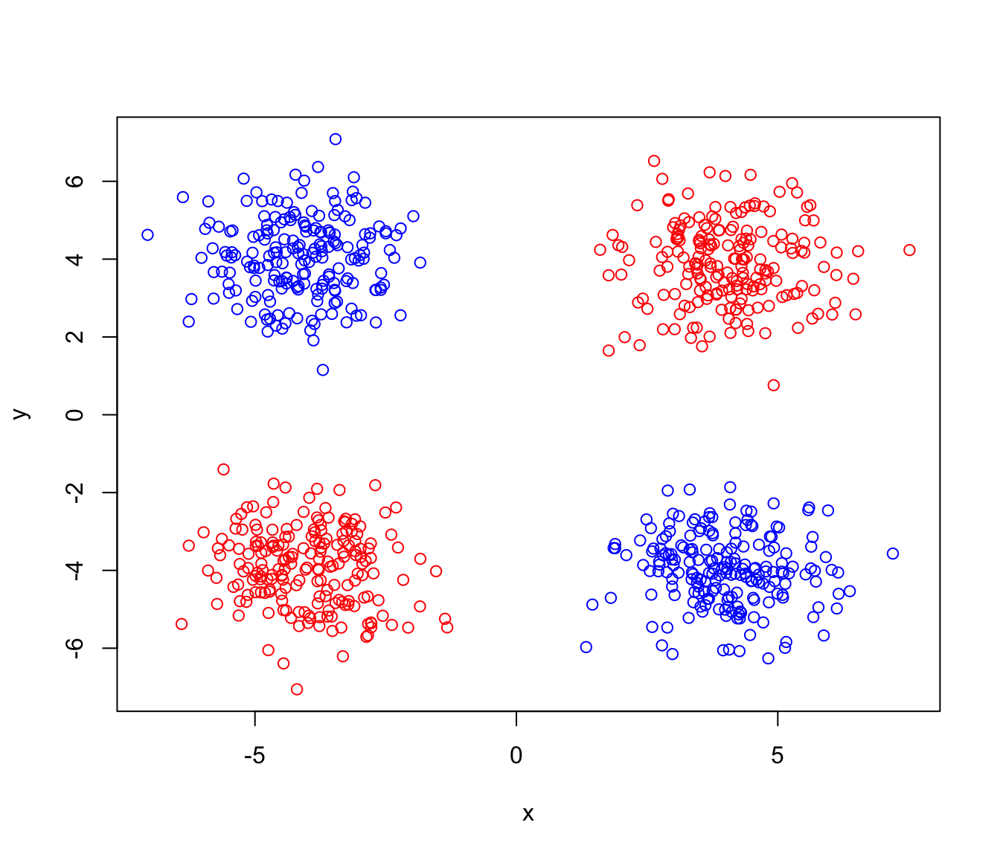
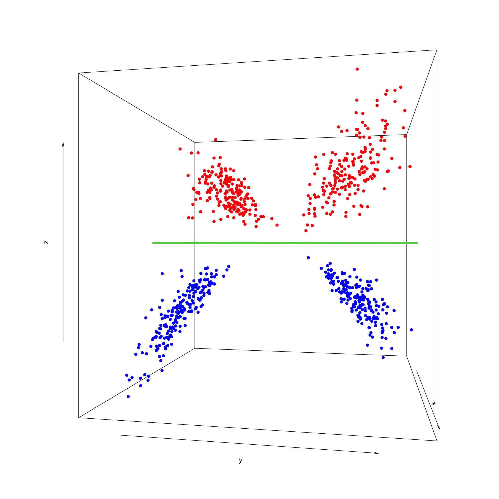
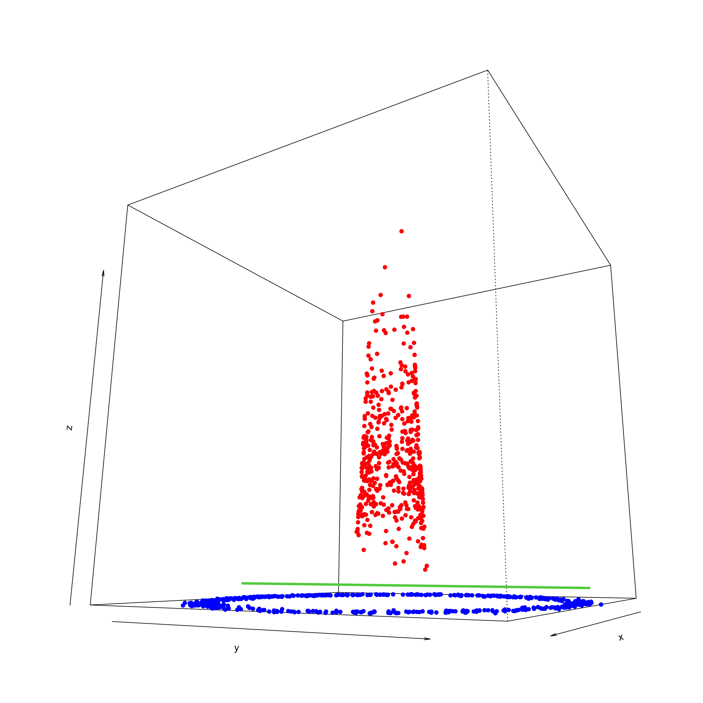
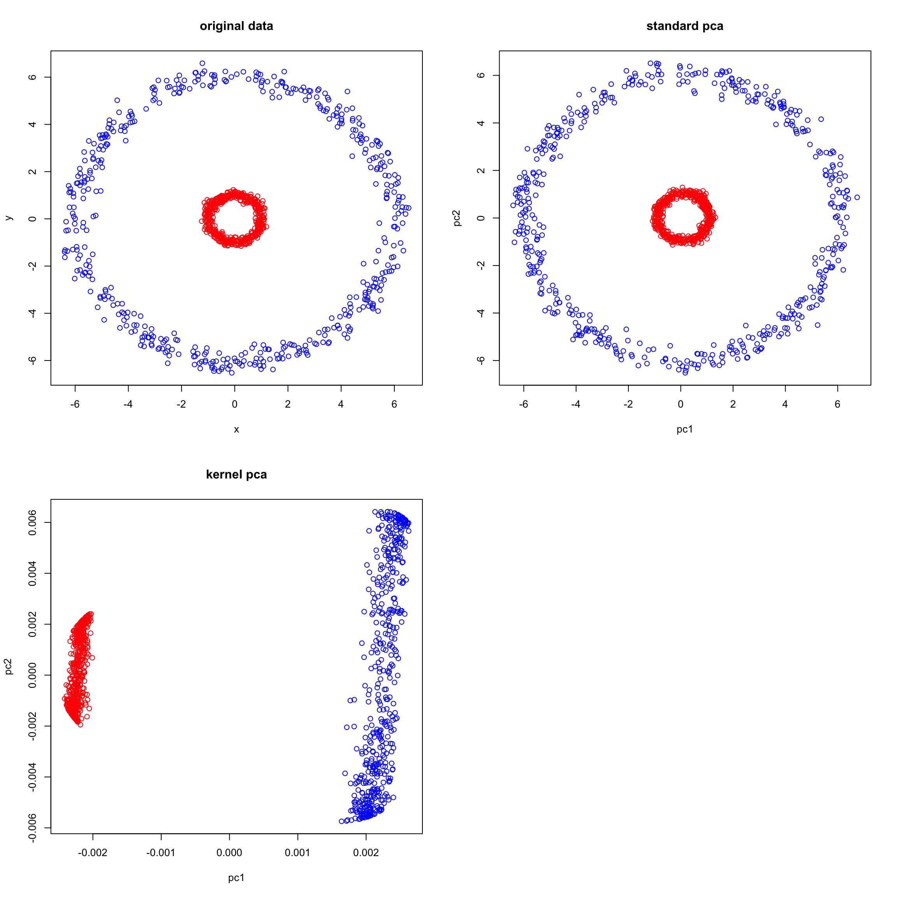

if(!requireNamespace("BiocManager")){
install.packages("BiocManager")
}
BiocManager::install("phyloseq")
# List of packages to be installed
packages <- c("mixKernel","ggplot2","mixOmics")
# Check and install missing packages
new_packages <- packages[!(packages %in% installed.packages()[,"Package"])]
if(length(new_packages)) install.packages(new_packages, dependencies = TRUE, type = "binary")
library(mixOmics)
library(mixKernel)
library(ggplot2)Data integration using kernel method
Setting up envrionment
You will need to install a few packages to fully run this notebook. The main needed package is mixKernel, ggplot2, mixOmics
Introduction
In classical data integration, we would like to use information across different modalities (eg., transcriptome, proteome and metabolome) to gain more comprehensive insights into the biological systems under study. This type of data can be used for an array of different purposes including but not limited to molecular classification, stratification of patients, outcome predictions and understanding of regulatory processes such as gene regulation and pathway analysis.
In this specific context, we are going to focus on unsupervised modeling and segmentation, which are promising because each type of omics data may contribute valuable information to the overall understanding of complex biological systems. By leveraging unsupervised modeling, we can uncover hidden patterns and relationships within the data without relying on predefined labels. This is especially beneficial when dealing with omics data, where the volume and complexity can be overwhelming. Furthermore, segmentation allows us to group similar data points, making it easier to identify and analyze specific subsets of the data. Given the heterogeneous nature of omics data, integrating multiple types can provide a more comprehensive view of the underlying biological processes.
In this lab we are going to learn the basics of how kernel fusion (mixKernel) can help us integrating multiple data views to uncover hidden but common pattern within the data. Before start using mixKernel we are going to learn a few background concepts to understand and appreciate how this technique works. Let’s start with what a kernel is and why we want to use it.
What is a Kernel
Many advanced machine learning algorithms uses the concept of a “kernel.” A kernel is a function that computes the similarity between two data points. The beauty of kernel methods is that they allow us to operate in a high-dimensional space without ever having to explicitly compute the coordinates in that space. This is often called the “kernel trick.”
In a supervised setting, kernel methods, especially the popular Support Vector Machines (SVMs), use kernels to separate data points belonging to different classes. When data isn’t linearly separable in its original space kernels allow data to be implicitly mapped to a higher-dimensional space where it becomes linearly separable. After this mapping, algorithms like SVM find the best hyperplane that separates the data into distinct classes.
Let’ see what i mean by that. If i give you two classes of red and blue measued on gene \(x\) and gene \(y\) and i ask you to draw a single line and plane that separates the two groups.
set.seed(3)
n_points <- 200
x <- c(rnorm(n_points, mean = -4, sd = 1),
rnorm(n_points, mean = 4, sd = 1),
rnorm(n_points, mean = 4, sd = 1),
rnorm(n_points, mean = -4, sd = 1))
y <- c(rnorm(n_points, mean = -4, sd = 1),
rnorm(n_points, mean = 4, sd = 1),
rnorm(n_points, mean = -4, sd = 1),
rnorm(n_points, mean =4, sd = 1))
class <- factor(c(rep(0, each = 2 * n_points), rep(1, each = 2 * n_points)))
data <- data.frame(x, y, class)
plot(x,y,col=ifelse(data$class == 0, "red", "blue"))
As you already figured out it is not possible to draw a single line that separates the two groups. As we said, a kernel maps the data to a higher dimention so they become linearly separable. We are now going to add a new dimention (based on our own data) and plot the data:
## add kernel
data$z <- data$x * data$y
# Plotting in 3D
# Create an empty 3D plot
zlim <- range(data$z)
xlim <- range(data$x)
ylim <- range(data$y)
zmat <- matrix(NA, 2, 2)
trans <- persp(z = zmat, x = xlim, y = ylim, zlim = zlim, theta = 100, phi = 0,
axes = TRUE, box = TRUE, col = NA, border = NA, xlab = "x", ylab = "y", zlab = "z")
# Add the points with colors based on class
points(trans3d(data$x, data$y, data$z, pmat = trans), col = ifelse(data$class == 0, "red", "blue"), pch = 16)
# Add the separating line
lines (trans3d(0, y = ylim, z = 0, pmat = trans), col = 3,lwd=4)
In this 3D space, we can easily find a flat plane that separates the groups. The data has become linearly separable in the transformed space.
The example above demonstrates that even simple datasets can be linearly inseparable in their original space. By mapping the data to a higher-dimensional space, we can make the data linearly separable and then apply linear classifiers, like a support vector machine (SVM) with a linear kernel, to find the optimal separating hyperplane.
Here’s the interesting part: Although we map data into a higher-dimensional space to achieve linear separability, the data points often turn out to lie on a lower-dimensional subspace within that high-dimensional space.
In the above example, we mapped 2D data into a 3D space using the transformation \(z=x \times y\). However, the data points actually lie on a 2D plane within that 3D space. So, even though we increased the dimensionality, the data effectively live in a lower-dimensional subspace.
In unsupervised learning, kernel methods can be employed in algorithms like kernel PCA (Principal Component Analysis) and kernel k-means clustering. Similar to the supervised setting, data is mapped to a higher-dimensional space using kernels. In this new space, methods like PCA can capture maximal variance in fewer dimensions, or clustering algorithms can group data points more effectively. We are soon going to see how kernel PCA works.
More kernels
As we said, a kernel is used to measure the similarity between the data points potentially (not necessarily) in much higher dimensions (sometime infinite). The simplest type of Kernel is linear kernel. It is just the dot product of two vectors. It works well when the data is already linearly separable.
\[ K(x,y)=x.y \] If our data is sitting in a matrix of \(n*p\) dimention, the kernel is simply the matrix product of the data matrix with its transpose, resulting in an \(n \times n\) symmetric matrix. Each entry \(K_{ij}\) in the matrix represents the similarity between the \(i^{th}\) and \(j^{th}\) data points in the dataset.
For the linear kernel, this matrix can be computed as:
\[ K = XX^T \]
Where \(X\) is our data matrix of size \(n \times p\).
The resulting kernel matrix \(K\) is also known as the Gram matrix. The diagonal elements of \(K\) represent the dot product of each data point with itself (which is simply the squared norm of the data point). Off-diagonal elements represent the dot product between different data points, indicating their similarity in the feature space.
We have already seen in the previous example how a linear transformation can be used to make the data linearly separable. However, not all decision boundaries are that clear. Look at the following example:
# Simulate concentric circle data
set.seed(123)
n <- 500
r1 <- 1
r2 <- 6
theta <- runif(n, 0, 2*pi)
x1 <- r1*cos(theta) + rnorm(n, 0, 0.1)
y1 <- r1*sin(theta) + rnorm(n, 0, 0.1)
theta <- runif(n, 0, 2*pi)
x2 <- r2*cos(theta) + rnorm(n, 0, 0.3)
y2 <- r2*sin(theta) + rnorm(n, 0, 0.3)
data <- data.frame(
x = c(x1, x2),
y = c(y1, y2),
class = factor(rep(c(0,1), each=n))
)
plot(data$x,data$y,col=ifelse(data$class == 0, "red", "blue"))Obviously we cannot separate the blue group vs the red one. So like before we are going to add a linear transformation \(z\)
data$z <- data$x * data$y
# Create an empty 3D plot
zlim <- range(data$z)
xlim <- range(data$x)
ylim <- range(data$y)
zmat <- matrix(NA, 2, 2)
par(mfrow=c(2,2))
trans <- persp(z = zmat, x = xlim, y = ylim, zlim = zlim, theta = 100, phi = 0,
axes = TRUE, box = TRUE, col = NA, border = NA, xlab = "x", ylab = "y", zlab = "z")
# Add the points with colors based on class
points(trans3d(data$x, data$y, data$z, pmat = trans), col = ifelse(data$class == 0, "red", "blue"), pch = 16)
trans <- persp(z = zmat, x = xlim, y = ylim, zlim = zlim, theta = 100, phi = 100,
axes = TRUE, box = TRUE, col = NA, border = NA, xlab = "x", ylab = "y", zlab = "z")
# Add the points with colors based on class
points(trans3d(data$x, data$y, data$z, pmat = trans), col = ifelse(data$class == 0, "red", "blue"), pch = 16)
trans <- persp(z = zmat, x = xlim, y = ylim, zlim = zlim, theta = 0, phi = 150,
axes = TRUE, box = TRUE, col = NA, border = NA, xlab = "x", ylab = "y", zlab = "z")
# Add the points with colors based on class
points(trans3d(data$x, data$y, data$z, pmat = trans), col = ifelse(data$class == 0, "red", "blue"), pch = 16)
trans <- persp(z = zmat, x = xlim, y = ylim, zlim = zlim, theta = 300, phi = 0,
axes = TRUE, box = TRUE, col = NA, border = NA, xlab = "x", ylab = "y", zlab = "z")
# Add the points with colors based on class
points(trans3d(data$x, data$y, data$z, pmat = trans), col = ifelse(data$class == 0, "red", "blue"), pch = 16)The decision boundary is much more complex. It is not possible to find a plane to separate the two groups. We will have to use another kernel.
The Radial Basis Function (RBF) or Gaussian Kernel is extremely versatile and is particularly useful when the nature of the decision boundary is not clear.
\[K(\mathbf{x}, \mathbf{y}) = \exp\left(-\frac{\|\mathbf{x} - \mathbf{y}\|^2}{2\sigma^2}\right)\]
The parameter \(\sigma\) determines the spread or width of the decision boundary, with larger values of \(\sigma\) resulting in a wider and smoother boundary.
When you want to compute the RBF kernel for matrices, you’re essentially looking to compute the kernel similarity for each pair of rows (data points) between the two matrices. Let’s denote the matrices as \(\mathbf{A}\) and \(\mathbf{B}\), where \(\mathbf{A}\) has shape \(m \times d\) and \(\mathbf{B}\) has shape \(n \times d\). The resulting kernel matrix \(\mathbf{K}\) will have shape \(m \times n\).
\[\mathbf{K}_{ij} = \exp\left(-\frac{\|\mathbf{A}_i - \mathbf{B}_j\|^2}{2\sigma^2}\right)\]
Where: \(\mathbf{A}_i\) is the \(i^{th}\) row of matrix \(\mathbf{A}\) and \(\mathbf{B}_j\) is the \(j^{th}\) row of matrix \(\mathbf{B}\).
Let’s see what happens if we add a variable \(z\) to our data using the RBF kernel.
sigma <- 0.5
data$z =exp(-rowSums(data[,1:2]^2) / (2 * sigma^2))
par(mfrow=c(1,1))
zlim <- range(data$z)
trans <- persp(z = zmat, x = xlim, y = ylim, zlim = zlim, theta = 120, phi = -13,
axes = TRUE, box = TRUE, col = NA, border = NA, xlab = "x", ylab = "y", zlab = "z")
points(trans3d(data$x, data$y, data$z, pmat = trans), col = ifelse(data$class == 0, "red", "blue"), pch = 16)
lines (trans3d(0, y = ylim, z = mean(c(max(min(data$z[data$class == 0])),max(min(data$z[data$class == 1])))), pmat = trans), col = 3,lwd=4)
We can see that RBF helps us to find a linear decision boundary in the transformed space. In practice, there are many kernel functions available, each with its own set of characteristics and assumptions. The choice of the kernel, and the corresponding parameters, can significantly influence the performance of the algorithm. Selecting the right kernel often involves empirical evaluation through techniques such as cross-validation, where various kernels (and their parameters) are tested to identify the one that offers the best performance on a validation dataset. Moreover, domain knowledge can play a critical role in guiding this choice. For example, certain kernels might be more suitable for specific types of data or tasks.
Now that we know a bit about kernels, it is time to talk a bit about kernel PCA. …
Kernel PCA
PCA
PCA is a special case of SVD in which basis vectors, or principal components, are the eigenvectors of the data’s covariance matrix. These principal components are orthogonal and represent the directions of maximum variance in the data. If you want to know more about PCA look at here.
Principal Component Analysis (PCA) might sound complex at first, but it can be understood intuitively as a method for simplifying and summarizing complex, multidimensional data.
Given a dataset containing the expression levels of thousands of genes from a group of individuals. Each individual is a complex data sample characterized by the expression of all these genes. Visualizing or analyzing such high-dimensional data can be very difficult.
PCA simplifies this complex, multidimensional space by identifying the “principal components” of the data, which are new axes that capture the most significant patterns in the data. These axes are combinations of the original gene expression levels that explain the maximum variance in the dataset.
For example, the first principal component (PC) might represent a combination of genes that change the most across all individuals. It could capture a general trend in gene expression that separates individuals based on age or response to a treatment. The second PC (orthogonal to the first), might capture the next highest variance, showing another layer of structure in the data, and so on.
Formally,PCA is derived from the right singular vectors contained in matrix \(V\). The singular values in \(\Sigma\) are related to the eigenvalues of the covariance matrix of the original data, and they indicate the amount of variance captured by each principal component.
In simpler terms, when we perform SVD on a data matrix \(A\), the columns of \(V\) (the right singular vectors) are actually the principal components of \(A\). The singular values in \(\Sigma\) tell us the importance or weight of these principal components.
The SVD of a matrix \(A \in \mathbb{R}^{m \times n}\) is expressed as: \[ A = U \Sigma V^T \] where
- \(U \in \mathbb{R}^{m \times m}\) is the left singular matrix,
- \(\Sigma \in \mathbb{R}^{m \times n}\) is the diagonal matrix containing the singular values, and
- \(V \in \mathbb{R}^{n \times n}\) is the right singular matrix.
To see this connection clearly, let’s consider the covariance matrix of \(A\), denoted as \(C\): \[ C = \frac{1}{n-1} A^T A \]
When we perform eigen decomposition on \(C\), we get: \[ C = W \Lambda W^T \] where \(W\) contains the eigenvectors and \(\Lambda\) is a diagonal matrix containing the eigenvalues.
Now, if we look at the SVD of \(A\) again: \[ A = U \Sigma V^T \] and compute \(A^T A\), we get: \[ A^T A = V \Sigma^T U^T U \Sigma V^T = V \Sigma^2 V^T \]
Comparing this with the eigen decomposition of \(C\), we observe that the right singular vectors \(V\) are the eigenvectors of \(C\), and the singular values squared in \(\Sigma^2\) are the eigenvalues in \(\Lambda\).
There are other algorithms for doing PCA for example using power methods but almost all of them will converge to the same solution with a certain numerical accuracy.
Kernel PCA
While PCA provides a powerful approach to summarizing high-dimensional linear data, it will have problems capturing non-linear patterns. This is where we can use Kernel PCA
Kernel PCA leverages the concept of kernels by applying PCA in the higher-dimensional space created by the kernel. The beauty of this method is that we never need to explicitly work in the higher-dimensional space, thanks to the kernel trick.
Let’s briefly understand the mathematics of Kernel PCA:
Given a centered data matrix \(X\), its covariance matrix is given by \(C = XX^T\). As we said if we apply a non-linear transformation \(\phi\) to the data, the data is mapped to a higher-dimensional space. The representation of this data in the transformed space is \(\phi(X)\). In this high-dimensional feature space, the covariance becomes \(\phi(X)\phi(X)^T\). However, working directly with \(\phi\) is computationally challenging.
Instead, we use a kernel \(K(x, y) = \phi(x) \cdot \phi(y)\) which implicitly calculates the dot product in the high-dimensional space without us having to ever compute \(\phi(x)\) explicitly.
When we apply PCA, we’re looking for the principal components of \(C\). In Kernel PCA, we’re looking for the principal components of the kernel matrix \(K\).
Given the mapping \(\phi\), our kernel matrix is \(K_{ij} = \phi(x_i) \cdot \phi(x_j)\). After centering the kernel matrix, we find its eigenvalues and eigenvectors. The principal components in the original space correspond to these eigenvectors.
We are now going to implement Kernel PCA using RBF kernel (we can use any kernel) and apply it on our circle data!
sigma <- 0.5
kernel_matrix <- exp(-(as.matrix(dist(scale(data[,1:2]), method = "euclidean", diag = TRUE, upper = TRUE))^2) / (2*2 * sigma))Given our kernel we need one more step before doing PCA. That is centring. We have to make sure that the mean of the data in the high dimention of space is centered at zero. Without centering, the first principal component might merely reflect the mean of the data rather than the direction of maximum variance. Centering ensures that PCA captures the primary patterns in the data (e.g., its major variations) rather than being influenced by the mean.
However, we don’t have the data in the higher dimention because we never calculated instead we used kernel trick to calculate similarity. In order to get a kernel repfecting the centered data, we need to do some small calculations.
Assume that we have data points \(x_1, x_2, ..., x_m\). The kernel function, \(k\), implicitly maps these data points into a higher-dimensional space using a function \(\phi\): \[k(x_i, x_j) = \langle \phi(x_i), \phi(x_j) \rangle\] Where \(\langle . , . \rangle\) denotes the dot product in the feature space. The mean of the data in that space is given by: \[\mu_\phi = \frac{1}{m} \sum_{i=1}^{m} \phi(x_i)\] Centering a data point involves subtracting the mean: \[\phi_{centered}(x_i) = \phi(x_i) - \mu_\phi\] The kernel between two centered data points \(x_i\) and \(x_j\) is: \[k_{centered}(x_i, x_j) = \langle \phi_{centered}(x_i), \phi_{centered}(x_j) \rangle\] Using the definition of centering: \[k_{centered}(x_i, x_j) = \langle \phi(x_i) - \mu_\phi, \phi(x_j) - \mu_\phi \rangle\] Expanding the dot product: \[k_{centered}(x_i, x_j) = k(x_i, x_j) - \langle \phi(x_i), \frac{1}{m} \sum_{l=1}^{m} \phi(x_l) \rangle - \langle \frac{1}{m} \sum_{l=1}^{m} \phi(x_l), \phi(x_j) \rangle + \langle \frac{1}{m} \sum_{l=1}^{m} \phi(x_l), \frac{1}{m} \sum_{s=1}^{m} \phi(x_s) \rangle\] Since our kernel provides the dot product in the feature space, we can replace all dot products with their corresponding kernel evaluations: \[k_{centered}(x_i, x_j) = k(x_i, x_j) - \frac{1}{m} \sum_{l=1}^{m} k(x_i, x_l) - \frac{1}{m} \sum_{l=1}^{m} k(x_l, x_j) + \frac{1}{m^2} \sum_{l=1}^{m} \sum_{s=1}^{m} k(x_l, x_s)\]
The above formula corresponds to the centering operation of the kernel matrix: \[K' = K - 1_m K - K 1_m + 1_m K 1_m\] Where \(K'\) is the centered kernel matrix, \(K\) is the original kernel matrix, and \(1_m\) is a matrix of ones of size \(m \times m\).
So let’s center our kernel:
m <- dim(kernel_matrix)[1]
kernel_matrix.centered <- t(t(kernel_matrix - colSums(kernel_matrix)/m) - rowSums(kernel_matrix)/m) + sum(kernel_matrix)/m^2We can now proceed with doing eigen decomposition as usual:
egens <- eigen(kernel_matrix.centered, symmetric = TRUE)
pcscores_kernel <- t(t(egens$vectors[, 1:2])/sqrt(egens$values[1:2]))We now have our scores sitting in pcscores_kernel. What i am going to do is to perform a standard PCA as well to compare the results.
pcscores_standard <- prcomp(data[,1:2])$xNow let’s plot things and go through them:
par(mfrow=c(2,2))
plot(data[,1:2],col= ifelse(data$class == 0, "red", "blue"),main="original data")
plot(pcscores_standard[,1:2],col= ifelse(data$class == 0, "red", "blue"),main="standard pca",xlab="pc1",ylab="pc2")
plot(pcscores_kernel[,1:2],col= ifelse(data$class == 0, "red", "blue"),main="kernel pca",xlab="pc1",ylab="pc2")
When applying standard PCA to our data, the results may seem almost identical to the original data. This is because PCA attempts to find orthogonal directions (principal components) that capture the most variance in the data. Given that concentric circles have a circular variance, PCA might struggle to find meaningful directions that linearly separate the two groups (inner circle vs outer circle). Instead, PCA might just capture the spread of the data points without necessarily distinguishing between the circles.
Kernel PCA, on the other hand, takes a non-linear approach. By mapping the data to a higher-dimensional space, KPCA aims to find a linear separation in that new space. Using the Radial Basis Function (RBF) kernel is particularly powerful for data like concentric circles because it essentially measures the ‘circular’ distance between data points.
In a non-linear setting, the points of the blue circle are closer to each other. The biggest different in fact is between the red and blue points. That is reflected on PC1. The second PC has capture the spread of each circle more or less.
In summary, while PCA struggles to find a linear separation in the original space for data like concentric circles, KPCA effectively maps the data to a higher-dimensional space where such a separation becomes possible. This showcases the power of kernel methods in tackling non-linear patterns and the importance of choosing the right kernel for the data at hand.
Now that we know about kernels and KPCA, it is time to go through data integration.
Data Integration Using Multiple kernel learning (mixKernel)
Multiple Kernel Learning (MKL) is seeks to combine multiple kernels, usually derived from different sources or based on different characteristics, into a single optimal kernel. This process aims to leverage the strengths of different kernel functions, thereby producing a more expressive combined kernel that can capture complex patterns in the data. The new kernel can then be used in any algorithm that uses kernel for its computations.
A basic way for combining multiple is to calculate the weighted sum of all the kernels.
\[K^* = \sum_{m=1}^{M} \beta_m K^m\] subject to: \[ \begin{cases} \beta_m \geq 0, \forall m = 1, …, M \\ \sum_{m=1}^{M} \beta_m = 1 \end{cases}\] The coefficients \(\beta_m\) determine the contribution of each individual kernel to the combined kernel. In other words, they assign weights to the different kernels reflecting their importance or relevance in the data integration process. Estimating these coefficients is a crucial step, and various optimization techniques have been proposed to address this problem.
A simple initial choice for the coefficients is to set all \(\beta_m\) values equal to \(\frac{1}{M}\). This choice, essentially, gives equal weight to all given kernels. This naive approach can serve as a starting point, but in practice, optimizing the values of \(\beta_m\) based on the data and the specific problem at hand is more beneficial.
The mixKernel algorithm presents multiple strategies for data integration via a composite kernel. Specifically, it offers three distinct methods for kernel combination: STATIS-UMKL, full-UMKL, and sparse-UMKL. The core objective of these methods is to effectively determine the coefficient \(\beta_m\).
The STATIS-UMKL approach determines \(\beta_m\) values to provide a unified representation of the \(M\) kernels. It seeks a consensus kernel, which is the kernel that best aligns with the average positioning of observations across different data blocks. As a result, it often assigns greater weight to kernels that display redundancy within the kernel ensemble.
Conversely, the two UMKL strategies focus on maintaining the native data topology. Their weight optimization is designed to ensure that the data’s structure in the feature space closely mirrors its original configuration. Notably, the sparse variant can assign a zero value to \(\beta_m\), essentially excluding certain data modalities. On the other hand, the full variant ensures all \(\beta_m\) values remain non-zero.
The mixKernel package also gives us the functionality to calculate kernels and also do variable selection. Let’s get start doing some data integration.
Data
Our data has to be in a data.frame where features are in the columns and samples in the rows. For now we are going to use TCGA dataset from mixOmics.
This data set is a small subset of the full data set from The Cancer Genome Atlas that can be analysed with the DIABLO framework. It contains the expression or abundance of three matching omics data sets: mRNA, miRNA and proteomics for 150 breast cancer samples (Basal, Her2, Luminal A) in the training set, and 70 samples in the test set. The test set is missing the proteomics data set.
# Download the dataset
download.file("https://github.com/mixOmicsTeam/mixOmics/raw/master/data/breast.TCGA.rda", destfile = "TCGA.rda")
# load the data
load("TCGA.rda")This data has already been split into a list with two elements. Training and testing. Each element itself is a list of four elements. Three elements are the actual datasets and one is the cancer subtypes.
str(breast.TCGA)List of 2
$ data.train:List of 4
..$ mirna : num [1:150, 1:184] 11.8 12.9 12.3 12 13.4 ...
.. ..- attr(*, "dimnames")=List of 2
.. .. ..$ : chr [1:150] "A0FJ" "A13E" "A0G0" "A0SX" ...
.. .. ..$ : chr [1:184] "hsa-let-7a-1" "hsa-let-7a-2" "hsa-let-7a-3" "hsa-let-7b" ...
..$ mrna : num [1:150, 1:200] 4.36 1.98 1.73 4.36 2.45 ...
.. ..- attr(*, "dimnames")=List of 2
.. .. ..$ : chr [1:150] "A0FJ" "A13E" "A0G0" "A0SX" ...
.. .. ..$ : chr [1:200] "RTN2" "NDRG2" "CCDC113" "FAM63A" ...
..$ protein: num [1:150, 1:142] 0.0491 -0.08 -0.0328 -0.2053 0.0602 ...
.. ..- attr(*, "dimnames")=List of 2
.. .. ..$ : chr [1:150] "A0FJ" "A13E" "A0G0" "A0SX" ...
.. .. ..$ : chr [1:142] "14-3-3_epsilon" "4E-BP1" "4E-BP1_pS65" "4E-BP1_pT37" ...
..$ subtype: Factor w/ 3 levels "Basal","Her2",..: 1 1 1 1 1 1 1 1 1 1 ...
$ data.test :List of 3
..$ mirna : num [1:70, 1:184] 12.8 13.9 12.9 12.4 13.1 ...
.. ..- attr(*, "dimnames")=List of 2
.. .. ..$ : chr [1:70] "A54N" "A2NL" "A6VY" "A3XT" ...
.. .. ..$ : chr [1:184] "hsa-let-7a-1" "hsa-let-7a-2" "hsa-let-7a-3" "hsa-let-7b" ...
..$ mrna : num [1:70, 1:200] 1.19 2.73 3.05 2.7 3.14 ...
.. ..- attr(*, "dimnames")=List of 2
.. .. ..$ : chr [1:70] "A54N" "A2NL" "A6VY" "A3XT" ...
.. .. ..$ : chr [1:200] "RTN2" "NDRG2" "CCDC113" "FAM63A" ...
..$ subtype: Factor w/ 3 levels "Basal","Her2",..: 1 1 1 1 1 1 1 1 1 1 ...Here we are going to only use the training data.
# calculate kernels for each data
mirna<-mixKernel::compute.kernel(breast.TCGA$data.train$mirna)
mrna<-mixKernel::compute.kernel(breast.TCGA$data.train$mrna)
protein<-mixKernel::compute.kernel(breast.TCGA$data.train$protein)In the code above, we computed linear kernels for each of the three datasets. mixKernel also gives us a tool to see the relationship between the datasets based on their kernels:
par(mfrow=c(1,1))
cim.kernel(mirna=mirna,mrna=mrna,protein=protein)Here the similarty is defined as RV-coefficient. It was originally introduced in the context of canonical correlation analysis, measures the similarity between two sets of variables or matrices. It’s essentially a multivariate generalization of the Pearson correlation coefficient.
The kernel generalization of the RV-coefficient provides a measure of similarity between two datasets (or two views of the same dataset) after they have been implicitly mapped to a high-dimensional space by a kernel function.
In the kernel setting, given two kernels \(K_1\) and \(K_2\) (symmetric, positive semi-definite matrices) corresponding to two datasets, the kernelized RV-coefficient can be defined in terms of these kernel matrices.
If we denote \(K_1\) and \(K_2\) as the centered kernel matrices, then the kernelized RV-coefficient, \(RV_k\), can be defined as:
\[RV_k = \frac{trace(K_1 K_2)}{||K_1||_F^2 \times ||K_2||_F^2}\]
Where \(||K||_F\) is Frobenius norm of a matrix \(K\).
Here, the numerator captures the shared structure between the two kernel matrices, while the denominator normalizes the coefficient. You can interpret this similar to correlation values. Here we see that we have moderate RV between the datasets. Let’s go ahead with kernel merging:
merged_kernel <- combine.kernels(mirna=mirna,mrna=mrna,protein=protein,
method = "full-UMKL")The merged_kernel now contains the merged kernel. We can do KPCA on this kernel to see the results:
merged_kpca <- kernel.pca(merged_kernel, ncomp = 2)
plotIndiv(merged_kpca,group=breast.TCGA$data.train$subtype,ind.names = F,ellipse = T,legend = T)So based on the results, Basal and LumA seems to be quite separated while Her2 is in between. One main question to ask if this results better than what we can get with any of the single datasets.
Given the pattern looks OK. We can go ahead with figuring out which variables are important for such a pattern.
Variable selection
When we work with kernels, we loose the original variables so we only have a similarity matrix. In order to find which variables are important we need to use an indirect approach to estimate the importance. To be more specific, when using a particular measure denoted as \(j\) to compute the kernel \(K_m\), the observed values for this measure are shuffled randomly across all samples, and then the kernel is recalculated as \(\tilde{K}_{{m,j}}\). After this, with the weights derived from the original, unpermuted kernels, a new composite kernel is constructed:
\[\tilde{K}^* = \sum_{l \neq m} \beta_l K_l + \beta_m \tilde{K}_{{m,j}}\]
To see the impact of measure \(j\) on a given Principal Component (PC) subspace, the Crone-Crosby distance is calculated for each axis, defined as:
\[\forall k = 1, \ldots, N,\]
\[D_{cc}(\alpha_k, \tilde{\alpha}_k) = \frac{1}{\sqrt{2}} ||\alpha_k - \tilde{\alpha}_k||\]
Here, \(\alpha_k\) and \(\tilde{\alpha}_k\) represent the eigen vectors coming from the eigen-decomposition of \(K^*\) and \(\tilde{K}^*\) respectively. We can do this using kernel.pca.permute
set.seed(123)
pca_variables <- kernel.pca.permute(merged_kpca,ncomp = 1,
mirna=colnames(mirna$X),mrna=colnames(mrna$X),protein=colnames(protein$X))
plotVar.kernel.pca(pca_variables, ndisplay = 10, ncol = 3)I this plot we display top 10 features (per omics) that are most important for the pattern we saw in KPCA (PC1). The variables are sorted based on Crone-Crosby distance. The larger the distance, the more important the variables are. We can see for example that some proteins have much more impact on the PC scores. One can select the top variables from other blocks and go ahead with pathway analysis and further interpretation.
In conclusion, the use of MKL (Multi-Kernel Learning) in data integration is particularly beneficial when the individual data sources or features exhibit varying levels of importance or when they capture different aspects of the data. By combining these kernels, MKL can enhance the expressiveness and robustness of the learning algorithm, enabling it to uncover complex relationships in the data that might be missed by using a single kernel. Furthermore, Kernel-based methods, such as MKL, offer the flexibility of incorporating prior knowledge or desired structures, like temporal smoothness, into the analysis. This inherent adaptability allows researchers and practitioners to tailor their models to specific datasets and research questions, ensuring that the nuances and subtleties of the data are effectively captured and interpreted.
Can you do the same analysis on the test data? Are we getting the same important variables?